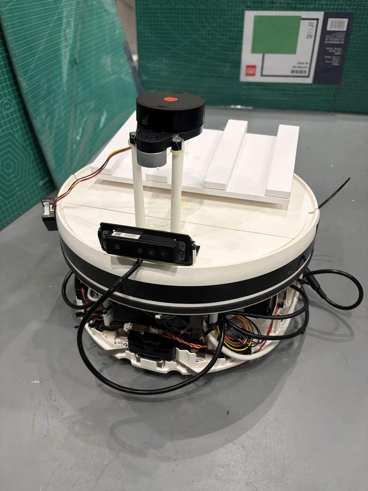

Autonomous Sweeping Robot
STM32F407 and RDK X5 mobile robot with custom PCB and live trajectory visualization.
Integrated embedded motor control, high-level perception, navigation, and hardware bring-up in a complete robot prototype.

STM32F407 and RDK X5 mobile robot with custom PCB and live trajectory visualization.
Integrated embedded motor control, high-level perception, navigation, and hardware bring-up in a complete robot prototype.
